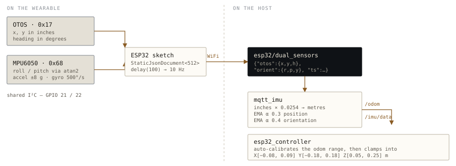

Wear the arm.
The wearable answers one question ten times a second: where is the operator's hand, and how is it tilted? Everything after that is unit conversion, smoothing, and a decision about what to do when the sensors disagree with reality.
What a node is
Everything below is a ROS 2 node. Step through the graph once and the rest of the page reads itself.
/joint_states, and both listeners receive them without knowing the other exists. That is why swapping the glove for the keyboard or for a trained policy is a matter of which processes you start, not a branch in anyone's code.
Everything the wearable does ends at one thing: a Cartesian target, in metres. What
happens next is a choice of two routes, and use_trajectory_controller
makes it. On the simulator route the controller publishes the target on
/move_to, move_server solves the kinematics, and the
motion ends in MuJoCo. On the hardware route the controller solves the same
kinematics inline, publishes servo commands, and the motion ends at the servos.
Both call the same solver. Run them together and the simulator becomes the
kinematics engine for the real arm: MuJoCo's joint states drive
pose_printer, and the physical arm mirrors whatever the physics does.
use_trajectory_controller picks which. Run both and the vertical link carries: the arm mirrors the simulation.The rest of this page is that first box, opened up.

Two sensors, because one is not enough
The wearable carries a SparkFun OTOS optical tracker at I²C address 0x17
and an MPU6050 at 0x68, sharing a bus on GPIO 21 and 22. They are not
redundant — each covers the other's blind spot.
OTOS — where the hand is
- Optical flow against a surface, like a mouse sensor
- Reports X and Y in inches, heading in degrees
- Absolute and drift-free over short sessions
- Zeroed at boot with
resetTracking()
MPU6050 — how the hand is tilted
- Accelerometer at ±8 g, gyroscope at 500°/s
- 21 Hz internal filter bandwidth
- Roll and pitch from
atan2on the accelerometer - Gyro is published but not integrated
That last point is the interesting trade. Deriving roll and pitch from gravity rather than integrating the gyroscope means the estimate cannot drift — there is no accumulating error to correct, and no filter to tune. The cost is that it believes any acceleration is gravity, so a sharp flick of the wrist briefly reads as a tilt. For teleoperating an arm at desk speed, no drift is worth more than immunity to jerk. Yaw comes from the OTOS heading instead, because gravity says nothing about rotation about the vertical axis.
512 bytes, ten times a second
The sketch packs both sensors into a fixed-capacity JSON document and publishes it
to esp32/dual_sensors. Values are rounded on the device — two decimals
for position, one for angles — which keeps the message comfortably inside the
buffer and costs nothing, since the downstream smoothing discards that precision
anyway.
{"otos": {"x": -1.42, "y": 3.07, "h": 12.4}, inches, degrees
"orient": {"r": -4.1, "p": 18.9, "y": 12.4}, degrees
"accel": {"x": 0.31, "y": -0.08, "z": 9.74}, m/s²
"gyro": {"x": 0.02, "y": 0.00, "z": -0.01}, rad/s
"ts": 48213} millis() since boot
The bridge does the unglamorous half
mqtt_imu subscribes to that topic and republishes it as two standard
ROS2 messages — nav_msgs/Odometry on /odom and
sensor_msgs/Imu on /imu/data. Standard message types matter
here: anything in the ROS ecosystem that consumes odometry can consume this glove
without knowing it exists.
| Stage | What happens |
|---|---|
| units | Inches × 0.0254 → metres; degrees → radians |
| smoothing | Exponential moving average, α 0.3 on position and α 0.4 on roll and pitch |
| yaw | Passed through raw — the OTOS heading is already stable, and smoothing it would add lag for nothing |
| covariance | 0.01 on x and y, 0.05 on yaw, declaring the optical tracker more trustworthy laterally than rotationally |
The two different smoothing constants are a deliberate asymmetry. Position noise is the thing an operator notices most — a twitchy end-effector feels broken — so it gets the heavier filter. Orientation is allowed to respond faster because wrist rotation is usually intentional.
Mapping a human arm onto a small one
esp32_controller is the node that turns a hand pose into an arm pose. It
has no idea how far the operator will actually move, so it calibrates as it goes:
it tracks the minimum and maximum odometry values it has seen and rescales the
operator's range onto the arm's, which is far smaller. The reachable box is about
seventeen centimetres wide.
workspace bounds, enforced by move_server X -0.08 … 0.09 m lateral — narrow, so sensitivity is highest here Y -0.18 … 0.18 m reach Z 0.05 … 0.25 m height
Axes can be locked individually (lock_x_axis, lock_y_axis,
lock_wrist), which sounds like a small convenience and is actually the
difference between a usable demo and a frustrating one — freezing height while
you practise reaching turns a six-degree-of-freedom problem into a two-degree-of-freedom
one you can actually learn.
The same node drives simulation and hardware
One parameter, use_trajectory_controller, decides where the solved pose
goes. In simulation the node publishes a Cartesian point to /move_to and
lets move_server handle the kinematics. On hardware it solves IK itself
and writes servo strings to /arm/servo_commands, skipping the simulator
entirely.
Both paths share the same GradientDescentIK header, so the two modes
cannot drift apart. This is the reason the solver lives in a header rather than
inside either executable — there is exactly one definition of what the arm's
kinematics are, and both consumers include it.
Running it
ros2 launch arm_bringup teleop.launch.py glove → real arm ros2 launch arm_bringup teleop.launch.py dry_run:=true no Arduino needed ros2 launch arm_bringup teleop.launch.py backend:=mujoco glove → simulator
Known rough edges
The WiFi credentials and the broker address are hardcoded in
esp32_wearable.ino, and the password is committed to the repository in
plaintext. It should be moved into a gitignored header or read from NVS, and the
exposed credential rotated. Flagged here rather than quietly omitted, because it is
the kind of thing worth fixing before the repo is read by anyone else.
Beyond that: the accelerometer-only tilt estimate means fast motion reads as rotation, and the auto-calibrating odometry range means the mapping changes slightly during the first few seconds of a session until the operator has explored their range.
Source
| esp32_wearable.ino | Firmware — sensor reads, JSON packing, MQTT publish |
| mqtt_imu_node.py | MQTT → /odom and /imu/data, units and smoothing |
| esp32_controller.cpp | Workspace mapping, calibration, IK, mode switch |
| gradient_ik.hpp | The shared solver, also used by move_server |